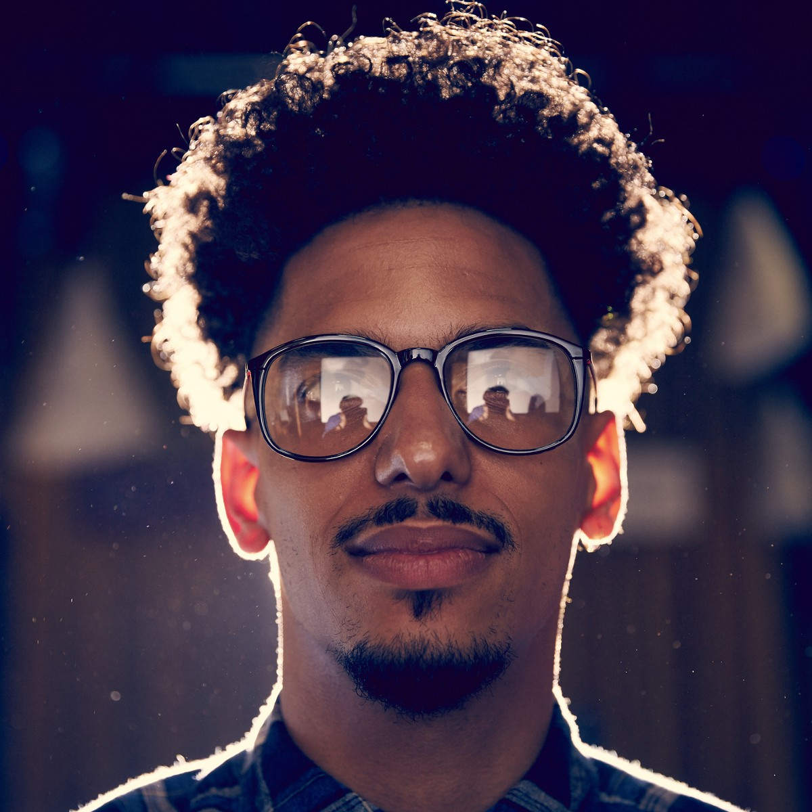

This is our Membership president, Kacie. She loves people and is very enthusiastic about cooking, making her perfect for this position. Kacie says she has been watching cooking shows from a young age, leading her to develop her love for cooking. She loves to make homemade pasta and garlic bread. Kacie can be reached at kccooks@gmail.com or at 937-325-5234
This is Jennifer, our Head of Marketing and Social Media. She said she joined the club because she wanted to get better at cooking and wanted to meet new people. Aside from cooking, Jennifer loves dogs, the beach, and anything art related. Jennifer is a current VCUarts student, and enjoys to use her creativity to make food art. She can be reached at Jenncooks@gmail.com or at 757-352-4523
This is MJ, our Head of Operations. MJ has been apart of this club for the past 3 years. MJ loved meeting new people, cooking, reading taro cards, and playing video games! MJ says his favorite thing to eat is Mac n Cheese, however his favorite thing to make is cookies. You can reach MJ at 804-909-9098 or email him at MJcooks@gmail.com

This is Jay, our club President. He loves to eat and cook, and specializes in deserts. Jay is originally from Salt Lake City, Utah, but moved to Richmond for work. He first joined the club 4 years ago in order to meet new people and make friends. Feel free to contact Jay at his email: jaycooks@gmail.com or call him at 509-254-1243